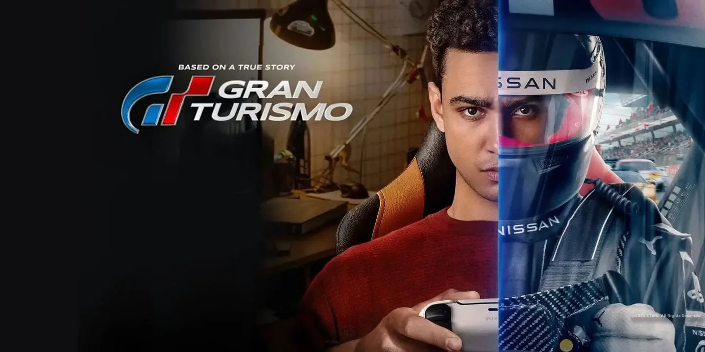
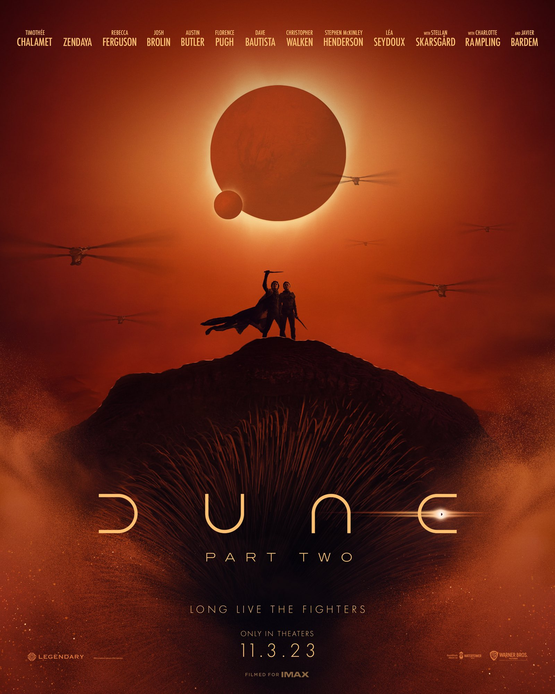

FORD V FERRARI

La trama sigue a un equipo determinado de ingenieros y diseñadores estadounidenses, liderados por el diseñador de automóviles Carroll Shelby y su conductor británico, Ken Miles, que son enviados por Henry Ford II y Lee Iacocca de la Ford Motor Company con la misión de construir el Ford GT40, un nuevo auto de carreras con el potencial para finalmente derrotar al siempre dominante Ferrari en las 24 Horas de Le Mans de 1966 en Francia.
GRAN TURISMO
La película relata la historia de Jann Mardenborough, un joven jugador de Gran Turismo cuyas habilidades de juego ganaron una serie de competencias de Nismo, la división de automovilismo de Nissan, para convertirse en un gran piloto de carreras profesional.
GODZILLA: KING OF THE MONSTERS

La nueva historia sigue los esfuerzos heroicos de la agencia criptozoológica Monarch mientras sus miembros se enfrentan a monstruos titánicos, incluyendo al imponente Godzilla, quien colisiona con Mothra, Rodan y su némesis, el dragón de tres cabezas Ghidorah. Cuando estas antiguas súper especies ancestrales pensadas como mitos aparezcan de nuevo, competirán por la supremacía, dejando la propia existencia de la humanidad pendiente de un hilo
DUNE 2
La princesa Irulan Corrino escribe en secreto que Paul Atreides aún puede estar vivo, mientras que su padre, el emperador Shaddam IV, está desanimado después de promover la caída de la Casa Atreides. De camino a Sietch Tabr en Arrakis, las tropas Fremen de Stilgar, incluidos Paul y Lady Jessica, superan una emboscada Harkonnen. En el Sietch surgen sospechas de que Jessica y Paul son espías, mientras que algunos Fremen tienen fe en ellos y creen en la profecía de una madre y un hijo que traerán prosperidad a Arrakis.
Titanes Del Pacifico

a película está ambientada en el año 2025, cuando la Tierra es atacada por kaijus, monstruos colosales que han surgido a partir de un portal interdimensional en el fondo del Océano Pacífico, llamado "El Abismo". Para luchar contra los monstruos, la humanidad se une para crear a los Jaegers: gigantescas máquinas humanoides, cada una controlada por dos pilotos cuyas mentes están unidas por un puente neuronal.